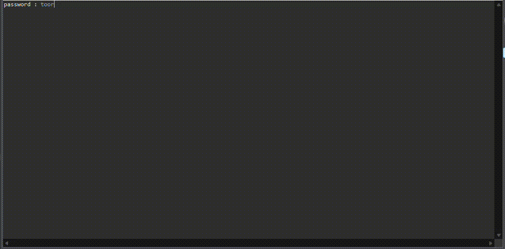
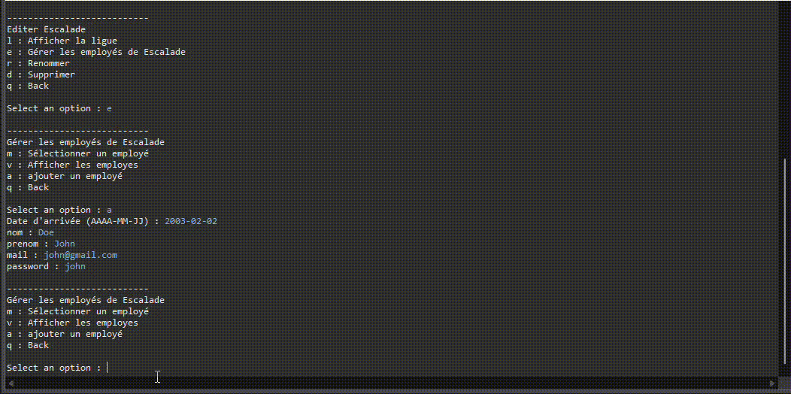
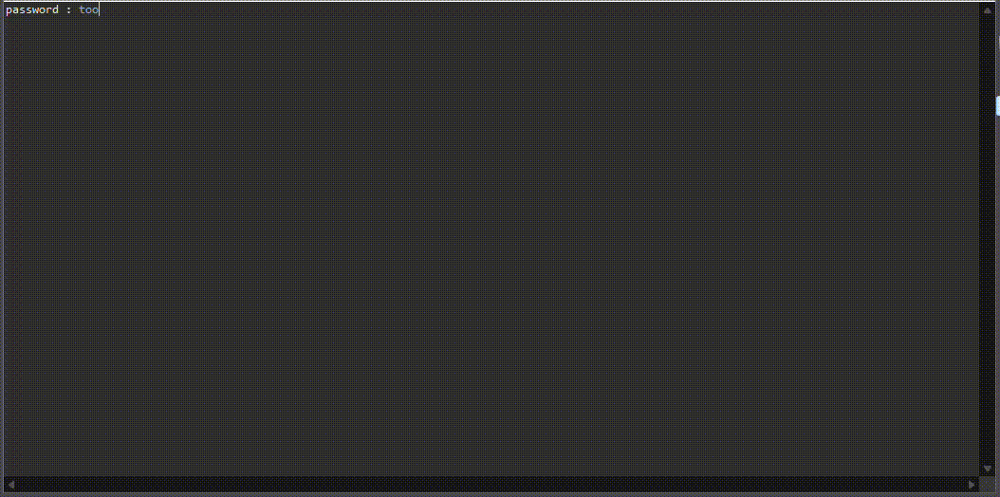

Personnel
Dans le cadre de ma formation en BTS SIO, option SLAM, j’ai développé une application Java pour gérer les employés de ligues sportives au sein d’un organisme fictif, la M2L. L’application est multi-utilisateurs et permet de gérer les employés selon différents niveaux d’accès, tout en centralisant les informations dans une base de données. Le projet partait d’un code de base fourni, comprenant déjà certaines fonctionnalités et la structure initiale de l’application. Mon travail a consisté à compléter et améliorer ce code en ajoutant des fonctionnalités, en adaptant l’architecture pour la rendre multi-utilisateurs et en mettant en place la gestion des droits et habilitations selon les différents profils. Ce projet m’a permis de mettre en pratique mes compétences en Java, en architecture 3-tiers et en gestion de bases de données, tout en apprenant à concevoir une application complète et fonctionnelle. J’ai également travaillé sur la structuration des données et la gestion des droits utilisateurs, ce qui m’a offert une expérience concrète dans le développement d’une application professionnelle.



